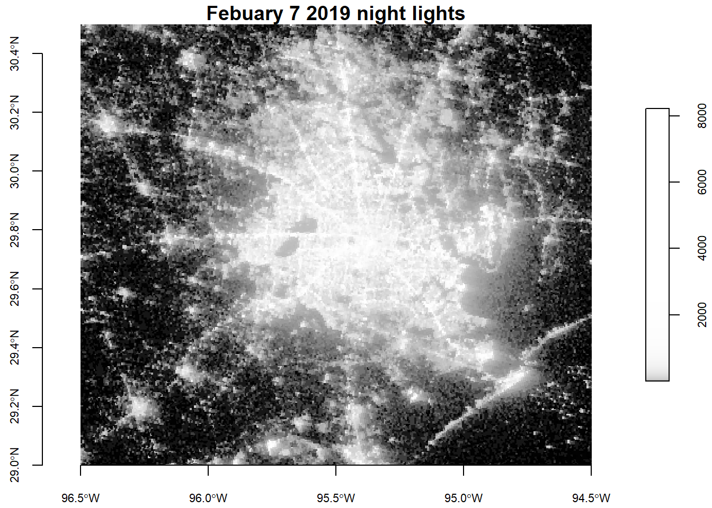
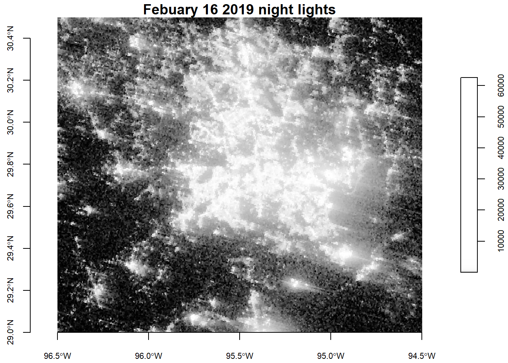
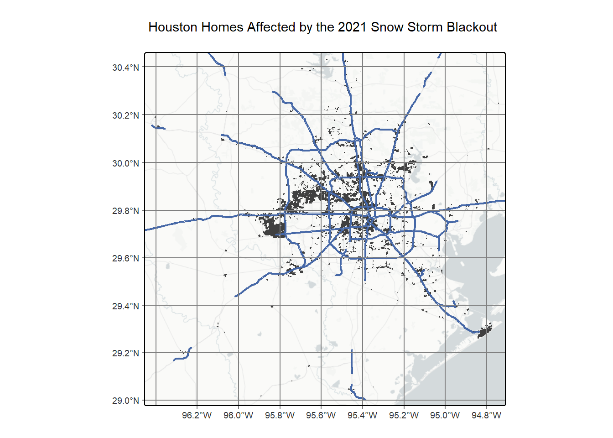
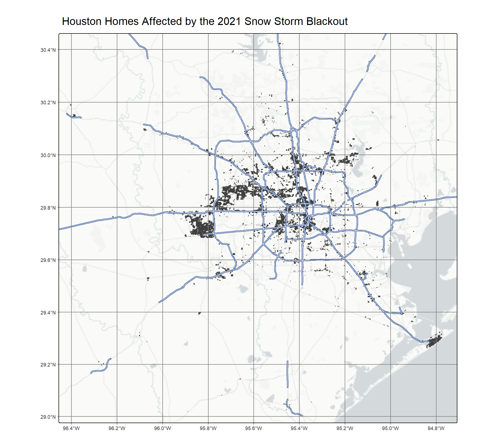
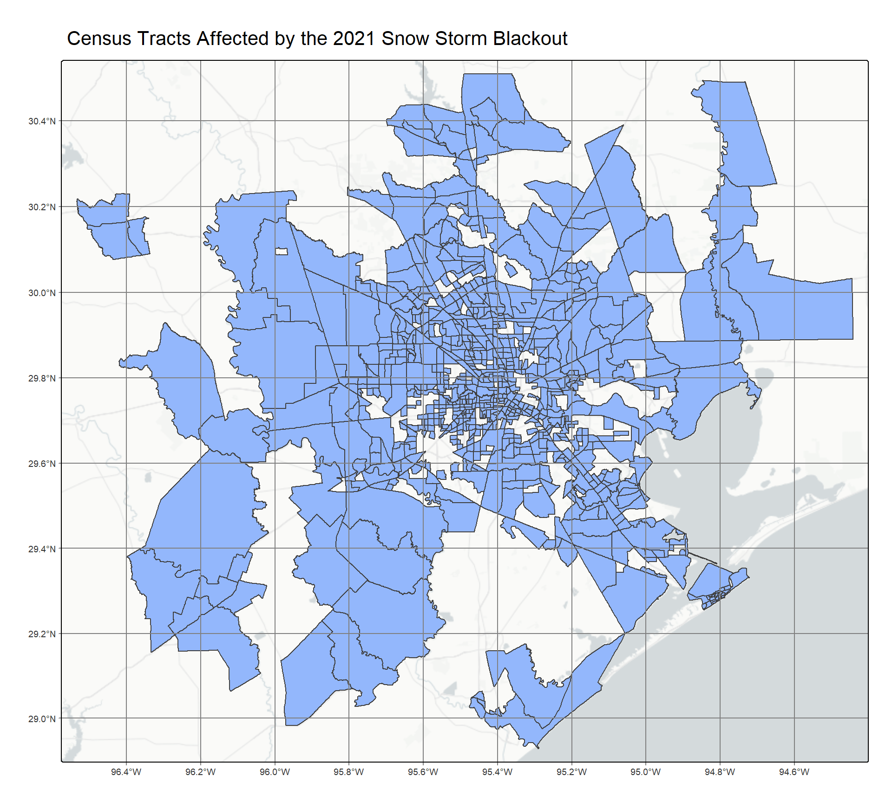

# Read in necessary libraries
library(tidyverse)
library(sf)
library(here)
library(tmap)
library(patchwork)
library(stars)2021 Texas Blackout and Income Disparity
Setup Code
- Loading necessary libraries
- Importing data
# Check names to pull out income and geography data from census tract
st_layers(here("data", "ACS_2019_5YR_TRACT_48_TEXAS.gdb"))
# Read income layer
income <- read_sf(here("data", "ACS_2019_5YR_TRACT_48_TEXAS.gdb"), layer = "X19_INCOME")
# Read polygon data from census
geography <- st_read(here("data", "ACS_2019_5YR_TRACT_48_TEXAS.gdb"), layer = "ACS_2019_5YR_TRACT_48_TEXAS")
# 2021-02-07 data geography 1
pre_light1 <- stars::read_stars(here("data", "VNP46A1", "VNP46A1.A2021038.h08v05.001.2021039064328.tif"))
# 2021-02-07 data geography 2
pre_light2 <- stars::read_stars(here("data", "VNP46A1", "VNP46A1.A2021038.h08v06.001.2021039064329.tif"))
# 2021-02-16 data geography 1
post_light1 <- stars::read_stars(here("data", "VNP46A1", "VNP46A1.A2021047.h08v05.001.2021048091106.tif"))
# 2021-02-16 data geography 2
post_light2 <- stars::read_stars(here("data", "VNP46A1", "VNP46A1.A2021047.h08v06.001.2021048091105.tif"))
# Read in residential data
houses <- st_read(here("data", "gis_osm_buildings_a_free_1.gpkg", "gis_osm_buildings_a_free_1.gpkg"), query = "SELECT *
FROM gis_osm_buildings_a_free_1
WHERE (type IS NULL AND name IS NULL)
OR type in ('residential', 'apartments', 'house', 'static_caravan', 'detached')")
# Road data
roads <- st_read(here("data", "gis_osm_roads_free_1.gpkg", "gis_osm_roads_free_1.gpkg"), query = "SELECT *
FROM gis_osm_roads_free_1
WHERE fclass='motorway'")Combine satellite images and crop to Houston area
# Combine all light areas from pre and post blackout dates
feb_7_comb <- st_mosaic(pre_light1, pre_light2)
feb_16_comb <- st_mosaic(post_light1, post_light2)
# Crop to only Houston area where we are interested in
# Create a bounding box apply to lights images, ensure they use the same crs
houston_crop <- st_bbox(c(xmin = -96.5, xmax = -94.5, ymin = 29, ymax = 30.5), crs = st_crs(4326))
# Apply bbox to both stars objects
feb7_cropped <- st_crop(feb_7_comb, y = houston_crop)
feb16_cropped <- st_crop(feb_16_comb, y = houston_crop)
# Check that all cordinates are actually equivalent to be added for raster
if (all(st_bbox(feb7_cropped) == st_bbox(feb16_cropped))) {
print("bounding boxes are equivalent")
} else {
warning("bounding boxes do not match")
}[1] "bounding boxes are equivalent"Produce maps for change in night light intensity after storms
# Plot to show change in night lights
# Base map somehow looks so much better than the tmap
colfunc <- colorRampPalette(c("black", "white"))
plot(feb7_cropped, axes = TRUE, main = "Febuary 7 2019 night lights", cex.axis = 0.7, col = colfunc(1000), ) #key.lab = "luminescence")
plot(feb16_cropped, axes = TRUE, main = "Febuary 16 2019 night lights", cex.axis = 0.7, col = colfunc(1000)) #key.lab = "luminescence")
Create blackout mask (isolate cells where blackouts occurred)
# Subtract images to find the difference in luminescence
diff <- (feb7_cropped - feb16_cropped)
# Reassign difference raster to a new object to save from errors
blackout_mask <- (diff > 200)
# Set cells where the difference is not greater than 200 to NA (these are non blacked out areas)
blackout_mask[[1]][blackout_mask[[1]] == FALSE] <- NA
# Vectorize mask
blackout_vector <- st_as_sf(blackout_mask)
# Validate boundaries
blackout_vector <- st_make_valid(blackout_vector)
# Reproject to EPSG:3083
blackout_projected <- st_transform(blackout_vector, 3083)Exclude highways from the blackout mask
# Check if the CRS is shared between blackout mask and roads data
if (st_crs(blackout_projected) == st_crs(roads)) {
print("CRS is equal")
} else {
warning("CRS is not the same")
print(paste("Roads CRS:", st_crs(roads)))
}[1] "Roads CRS: WGS 84"
[2] "Roads CRS: GEOGCRS[\"WGS 84\",\n ENSEMBLE[\"World Geodetic System 1984 ensemble\",\n MEMBER[\"World Geodetic System 1984 (Transit)\"],\n MEMBER[\"World Geodetic System 1984 (G730)\"],\n MEMBER[\"World Geodetic System 1984 (G873)\"],\n MEMBER[\"World Geodetic System 1984 (G1150)\"],\n MEMBER[\"World Geodetic System 1984 (G1674)\"],\n MEMBER[\"World Geodetic System 1984 (G1762)\"],\n MEMBER[\"World Geodetic System 1984 (G2139)\"],\n MEMBER[\"World Geodetic System 1984 (G2296)\"],\n ELLIPSOID[\"WGS 84\",6378137,298.257223563,\n LENGTHUNIT[\"metre\",1]],\n ENSEMBLEACCURACY[2.0]],\n PRIMEM[\"Greenwich\",0,\n ANGLEUNIT[\"degree\",0.0174532925199433]],\n CS[ellipsoidal,2],\n AXIS[\"geodetic latitude (Lat)\",north,\n ORDER[1],\n ANGLEUNIT[\"degree\",0.0174532925199433]],\n AXIS[\"geodetic longitude (Lon)\",east,\n ORDER[2],\n ANGLEUNIT[\"degree\",0.0174532925199433]],\n USAGE[\n SCOPE[\"Horizontal component of 3D system.\"],\n AREA[\"World.\"],\n BBOX[-90,-180,90,180]],\n ID[\"EPSG\",4326]]"# Set CRS to be equal
roads <- st_transform(roads, crs = st_crs(blackout_projected))
# Aggregate roads data
roads_union <- st_union(roads)
# Create buffer object
roads_buffer <- st_buffer(roads_union, 200)
# Join road data with blackout mask
blackout_roads <- st_difference(blackout_projected, roads_buffer)
houses <- st_transform(houses, crs = st_crs(blackout_roads))
blackout_res <- st_intersection(houses, blackout_roads)
# Map homes that lost power
tm_shape(blackout_res) +
tm_polygons() +
tm_shape(roads_buffer) +
tm_lines(col = "#253C78") +
tm_basemap("CartoDB.PositronNoLabels") +
tm_graticules() +
tm_title(text = "Houston Homes Affected by the 2019 Snow Storm Blackout")
# How many homes lost power?
power_out <- length(blackout_res$osm_id)The number of homes that lost power as a result of the 2019 snow storm was: power_out.
Socioeconomic analysis
# Fix column name that needs to be joined on so it is the same in both datasets
income <- income %>%
rename(GEOID_Data = GEOID)
# Join geography onto income data
socio <- left_join(geography, income, by = "GEOID_Data")
# Check that CRS of income and residence in formation is the same and transform if not
if (all(st_crs(socio) == st_crs(blackout_res))) {
print("CRS matches")
} else {
warning("CRS of objects do not match")
socio <- st_transform(socio, crs = st_crs(blackout_res))
}
blackout_res_union <- st_union(blackout_res)
socio_spatial <- st_filter(socio, blackout_res_union)
socio_subset <- socio_spatial %>%
select(B19013e1, COUNTYFP, TRACTCE)
tm_shape(socio_subset) +
tm_polygons(fill = "#253C78") +
tm_basemap("CartoDB.PositronNoLabels") +
tm_graticules() +
tm_title(text = "Census Tracts Affected by the 2019 Snow Storm Blackout")
census_blacked <- socio_subset %>%
rename("median_income" = B19013e1)
census_non_blacked <- socio %>%
filter(!(socio$GEOID_Data %in% socio_spatial$GEOID_Data)) %>%
select(B19013e1, COUNTYFP, TRACTCE) %>%
rename("median_income" = B19013e1)
# Create a new column on each dataframe with whether this is a blackout or not tract
census_blacked$blackout_status <- "blackout"
census_non_blacked$blackout_status <- "no blackout"
# Select only columns that are needed for plotting and drop geometry for easier processing
blacked <- census_blacked %>%
select(median_income, blackout_status) %>%
st_drop_geometry()
non_blacked <- census_non_blacked %>%
select(median_income, blackout_status) %>%
st_drop_geometry()
# Join dataframes to plot
median_inc_comb <- rbind(blacked, non_blacked)
# Plot median income by blackout or not
ggplot(median_inc_comb,
aes(x = blackout_status,
y = median_income,
fill = blackout_status)) +
geom_boxplot(width = 0.5,
outlier.size = 0.8,
alpha = 0.8) +
stat_summary(fun="median", geom="text", aes(label=after_stat(y)), vjust=-0.5) +
scale_fill_manual(values = c("#253C78", "#9A031E")) +
scale_y_continuous(minor_breaks = seq(from = 0, to = 250000, by = 10000)) +
theme_minimal() +
theme(legend.position = "none") +
labs(title = "Household Income in Houston Homes by Blackout Status", x = "Blackout status", y = "Income (U.S. dollars)")